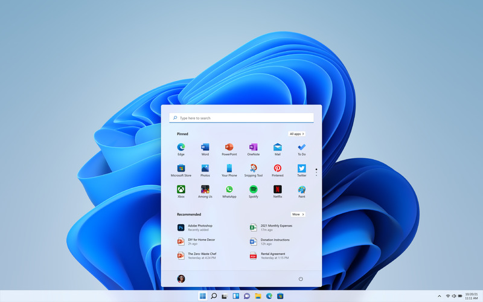

Центр уведомлений и пользовательский интерфейс настроек

Windows 11 — это новая версия Windows, в которой важные инструменты будут всегда у вас под рукой. Благодаря интуитивно понятной навигации и удобной организации интерфейса Windows 11 выглядит совершенно по-новому. С ней вы получаете больше приложений и широкие возможности для творчества и продуктивной работы.
Системные требования Windows 11
В Windows 11 обновленный проводник имеет современный и более чистый вид с новыми элементами дизайна пользовательского интерфейса. Появились такие визуальные изменения, как: